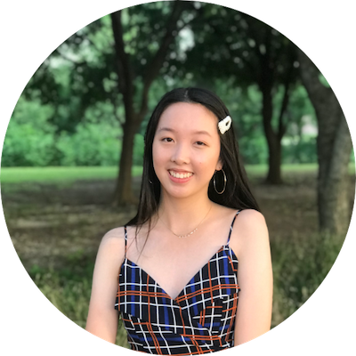

About Me
I am currently a sophomore majoring in Information Science and minoring in business at Cornell University. I discovered the world of UX design right before I started college and immediately became fascinated. Since delving in, I have been seeking opportunities to design for all different types of projects, ranging from healthcare to fashion. I am always seeking to learn new things whether that's improving my visual design techniques or learning about business needs. In my freetime, I enjoy drawing, dancing, and thrifting.
